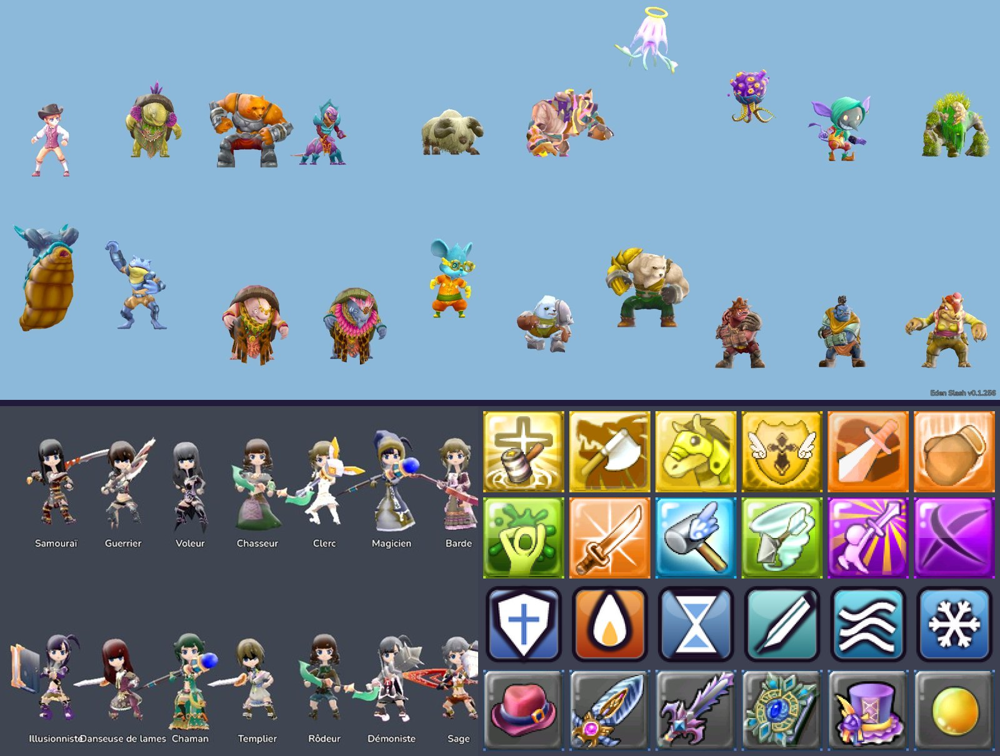
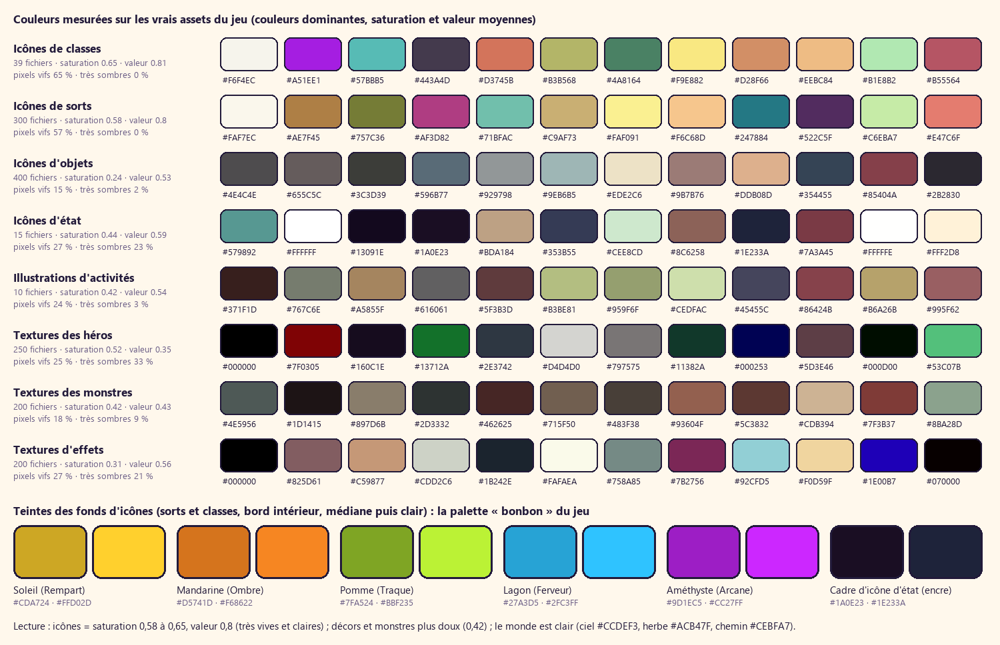

Trois pistes d'interface dans la DA du jeu
Les trois pistes partent des mêmes mesures (palette, formes et contours des icônes, des héros et des monstres du jeu) et gardent toutes les icônes et images du jeu. Elles ne diffèrent que par la matière des boutons et des panneaux. Chaque piste est montrée sur quatre écrans réels : lobby, menu Jouer, bilan, composants (avec le clic image par image). Cliquer une image pour l'agrandir.
D'où part tout cela


Bonbon glossy
L'idée
Le fond des icônes de sorts étendu à toute l'interface : panneaux blancs nacrés, boutons en dégradé brillant avec un gros reflet, pilules, ombres douces colorées.Pour / contre
- Le plus proche du rendu des icônes.
- Contours pâles : se fond dans le ciel et le chemin clairs ; flou, « jeu mobile », peu de caractère ; le clic se lit mal sans ombre dure.
| Fidélité à la DA | 4 |
| Lisibilité sur la scène | 3 |
| Ressenti du clic | 3 |
| Caractère, « pas IA » | 2 |
| Faisable en Godot | 4 |


Autocollant manga
L'idée
Chaque élément est un autocollant découpé : contour d'encre de 3 px (la couleur des cadres d'icônes d'état), aplats en deux tons nets comme l'ombrage des personnages, reflet blanc, ombre dure sur laquelle le bouton s'écrase quand on clique. Panneaux papier, puits d'encre, trame manga, titres inclinés.Pour / contre
- Lisible sur n'importe quel fond (l'encre sépare tout) ; c'est le langage des icônes (contour + aplats + reflet).
- Le clic devient physique : l'élément descend sur son ombre et rebondit.
- Le plus « dessiné à la main », le moins générique.
- Demande de la rigueur (épaisseurs constantes, pas trop de couleurs à la fois).
| Fidélité à la DA | 5 |
| Lisibilité sur la scène | 5 |
| Ressenti du clic | 5 |
| Caractère, « pas IA » | 5 |
| Faisable en Godot | 4 |


Gelée de nuit
L'idée
Le cadre des icônes d'état en grand : panneaux bleu-nuit, contenus bonbon saturés qui luisent, boutons en gelée brillante.Pour / contre
- Très lisible pour le HUD et les écrans denses ; proche de l'interface actuelle.
- Grandes masses sombres sur un monde ensoleillé : l'écran s'assombrit, la couleur du jeu recule.
| Fidélité à la DA | 3 |
| Lisibilité sur la scène | 4 |
| Ressenti du clic | 4 |
| Caractère, « pas IA » | 3 |
| Faisable en Godot | 5 |


Décision de la DA : piste B
L'autocollant manga applique la DA telle qu'elle est déjà dessinée dans le jeu : contour d'encre des icônes d'état, aplats nets des personnages, reflet et rayons des icônes de sorts, 5 couleurs bonbon des familles. Il reste lisible sur le monde clair et donne au clic un vrai poids (écrasement sur l'ombre dure, rebond, son, vibration). Il emprunte deux choses aux autres pistes : le reflet brillant de A sur le bouton primaire, et les puits d'encre de C pour les listes et le HUD.
Une seule question au joueur, si besoin : les grands panneaux en papier clair (B) te conviennent-ils, ou préfères-tu des panneaux nuit (C) pour les écrans de menu ?
Polices : Mochiy Pop One (titres) + M PLUS Rounded 1c (texte), SIL OFL 1.1. Spécification complète : BIBLE.md (§ 5 à 8), jetons : tokens.json.